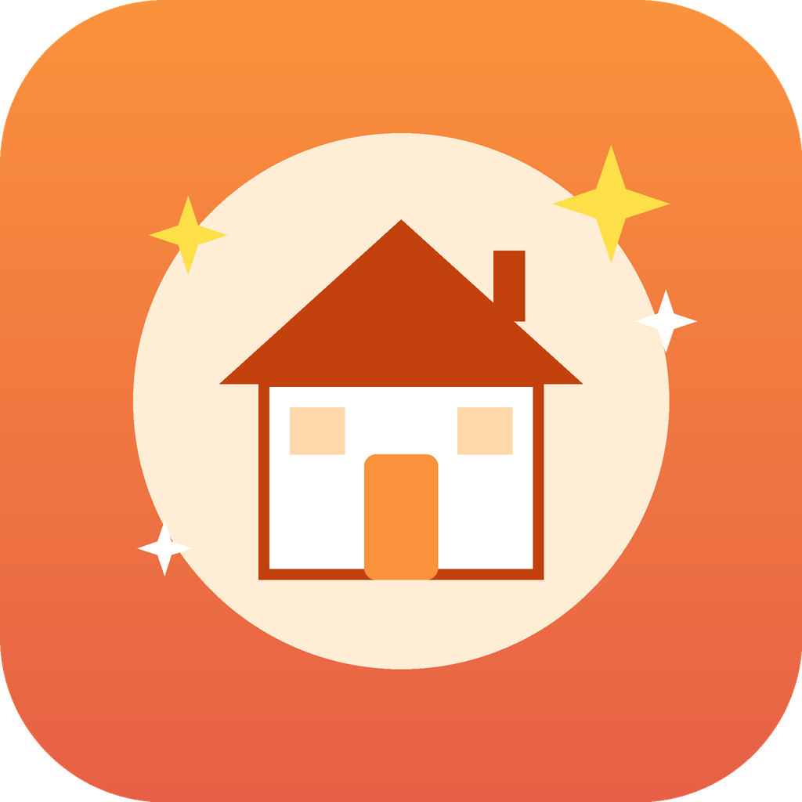

Rumah Rapi StudioID: Rumah Rapi Studio adalah alat pribadi yang digunakan kreator akun TikTok @tipsrapi (Rumah Rapi) untuk mengirim video tips rumah yang sudah jadi ke kotak masuk TikTok milik kreator sendiri sebagai draf. Kreator meninjau dan memposting setiap video secara manual di aplikasi TikTok.
EN: Rumah Rapi Studio is a personal tool used by the creator of the TikTok account @tipsrapi (Rumah Rapi) to send finished home-tips videos to the creator's own TikTok inbox as drafts. The creator reviews and posts every video manually in the TikTok app. It is not a public service and does not post on behalf of other users.
Privacy Policy / Kebijakan PrivasiTerms of Service / Ketentuan Layanan
Contact / Kontak: kocedt@gmail.com